Префектура Нагано · Татэсина · еда
Auberge Espoir в Татэсине: дичь Синсю на тарелке шефа французской кухни
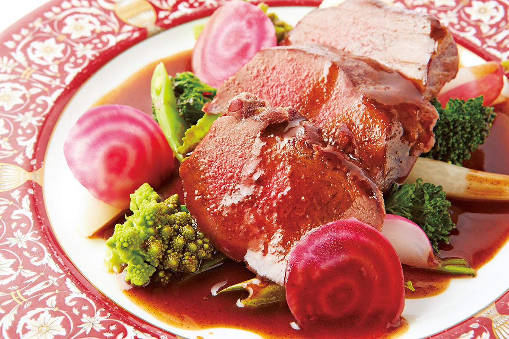
Во Франции дичь едят даже дома, в обычных семьях. В оберже Auberge Espoir на плато Татэсина её готовят из того, что добыли охотники префектуры Нагано, а шеф видит в этом способ помочь фермерам, чьи поля разоряют дикие звери.
Шеф
Что такое дичь
Плато Татэсина в префектуре Нагано даже летом остаётся сухим и прохладным, и японцы давно ездят сюда спасаться от жары. Здесь, на территории города Тино, стоит Auberge Espoir, обержа, то есть ресторан с номерами, где готовят настоящие блюда из дичи по-французски. В Японии такая кухня до сих пор встречается редко.
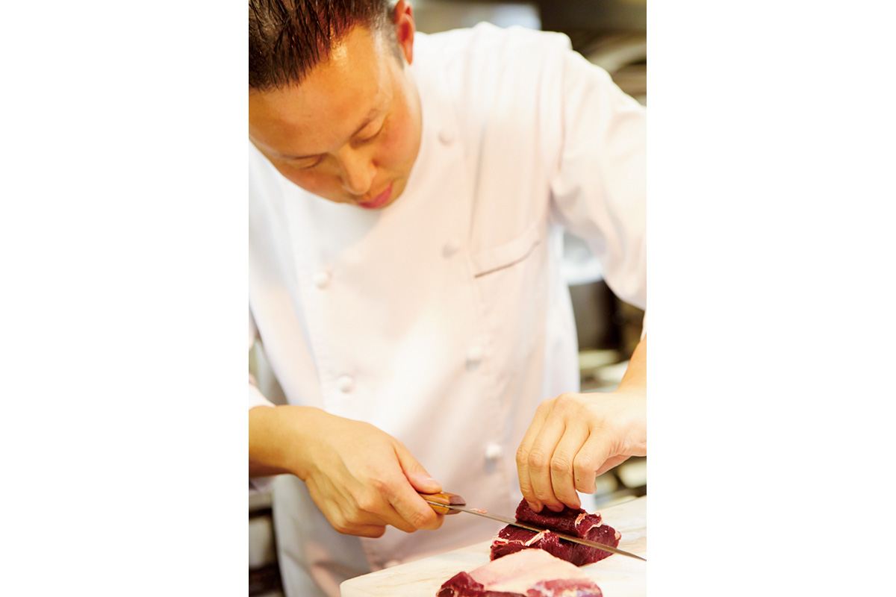
По-французски дичь называется «жибье», но шеф напоминает, что в Японии дичь готовили издавна: это еда матаги, потомственных охотников северных гор.
«Особенно хороши звери и птицы, добытые осенью. Перед зимой они запасают жир, поэтому мясо получается сочным. По густоте вкуса и аромату дичь совсем не похожа на мясо домашних животных»
Норихико Фудзики, шеф
У дичи есть и другая ценность. В 2012 году, по словам шефа, в одной только префектуре Нагано жило больше 100 000 диких оленей, и многие фермеры страдали от потрав. Ежегодно отстреливали около 20 000 животных, но в пищу шло лишь 7%, остальное выбрасывали.
«Тогда я решил: давайте больше есть и пускать это в дело. Принимать с благодарностью жизнь, которую зверь накопил, чтобы пережить зиму»
Норихико Фудзики, шеф
Поэтому в Auberge Espoir работают со свежей дичью из префектуры Нагано. Как и во Франции, здесь следуют принципу «ешь местное»: на тарелку попадает вся природа Татэсины.
Меню
Барсук, олень и лесной голубь
Барсук: ароматный жир, который тает во рту
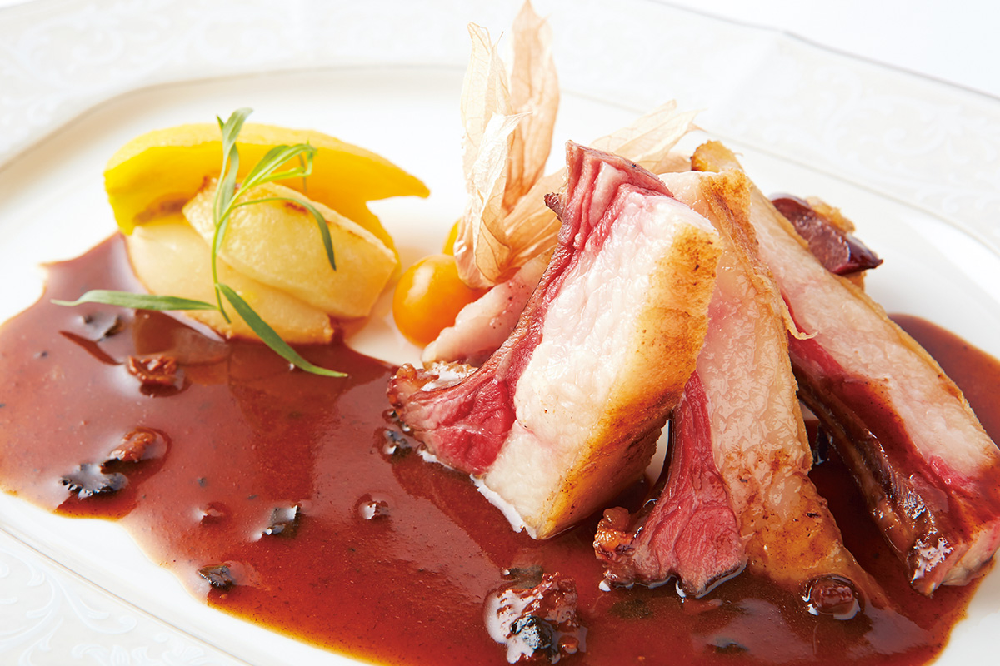
Блюдо «спинка барсука на косточке, жаренная на гриле, с фруктами» показывает вкус барсука без прикрас. Мясо жарят на гриле, чтобы ушла часть жира, и приправляют только солью и перцем. Кисловатый соус с портвейном и красным винным уксусом снимает тяжесть, и остаётся чистый вкус мяса и жира.
Олень: плотное мясо с глубоким вкусом
Оленью спинку обжаривают в большом количестве сливочного масла, и мясо получается сочным. Соус варят из оленьих костей и сухожилий на красном вине и добавляют немного джина. Вкус у блюда лёгкий, при этом глубокий, мясо упругое. Подают его с тёплыми сезонными горными овощами Татэсины, в которых будто чувствуется запах земли.
Лесной голубь в слоёном тесте
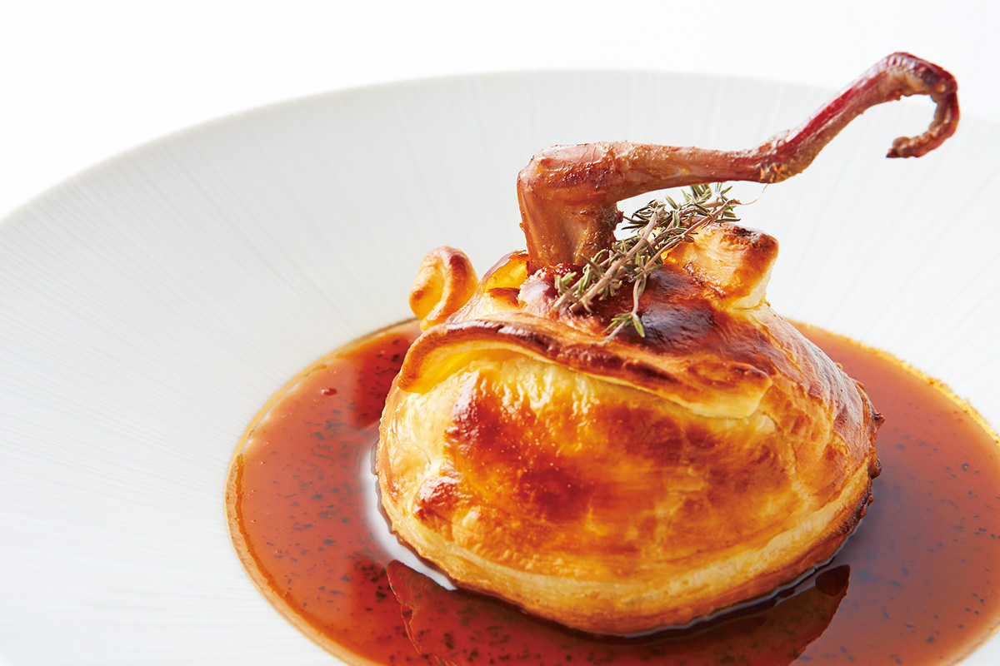
Для «лесного голубя с таро и фуа-гра в тесте» птицу разделывают сырой. Грудку и ножки неделю маринуют в соусе, сваренном на голубиных костях и красном вине. Потом мясо заворачивают в слоёное тесто вместе с рубленым таро, трюфелем и фуа-гра и запекают в духовке.
Охота
«У дикого зверя нет никакого запаха»
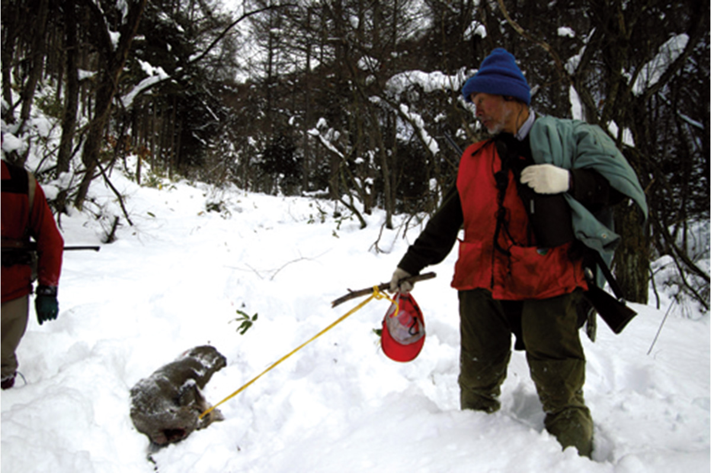
Норихико Фудзики предлагает дичь префектуры Нагано под именем «дичь Синсю». Когда он увидел перед собой свежую местную добычу, его кое-что удивило.
«Дичь, которую везут из Франции, пахнет, а у свежей запаха нет совсем. На самом деле у дикого зверя никакого неприятного запаха нет»
Норихико Фудзики, шеф
Шеф дорожит общением с охотниками и иногда сам уходит с ними в горы.
«Больше всего меня поразило, как охотники готовят дичь. Их способы переворачивают представления французской кухни, и всё это невероятно вкусно. Благодаря им мой кругозор как повара стал намного шире»
Норихико Фудзики, шеф
Обычные кулинарные правила к дичи часто не подходят, и как раз это шефа увлекает.
«Каждый зверь отличается: всё зависит от того, где он жил и что ел. Вкус меняется даже от того, как стрелял охотник и как он разделал тушу. Приходится пускать в ход все знания и опыт. Каждый раз это поединок всерьёз, другого такого продукта нет. Поэтому и готовить интересно»
Норихико Фудзики, шеф
К столу
Ветчина, вино Синсю и грибы
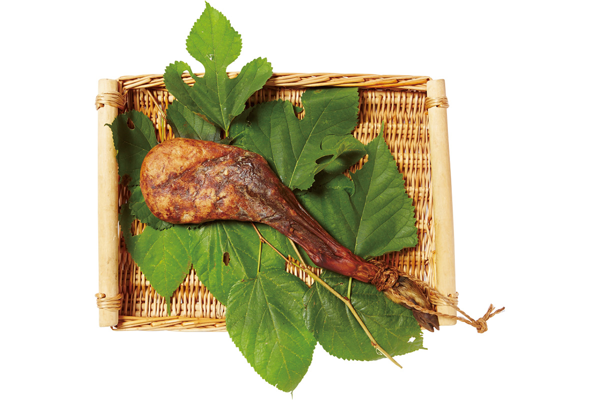
«Домашняя сыровяленая ветчина из молодого кабана очень вкусна»
Норихико Фудзики, шеф
В Европе молодого кабана называют «маркассен» и ценят выше взрослого. Мясо у него нежное и без особого кабаньего запаха. Спинка идёт на основные блюда, а окорок коптят и делают из него ветчину. В Auberge Espoir её подают на закуску вместе с салатом из дикорастущих трав.
«Дичь и вино созданы друг для друга»
Норихико Фудзики, шеф
К дичи Синсю лучше всего подходят вина Синсю. Вот несколько лучших местных марок.
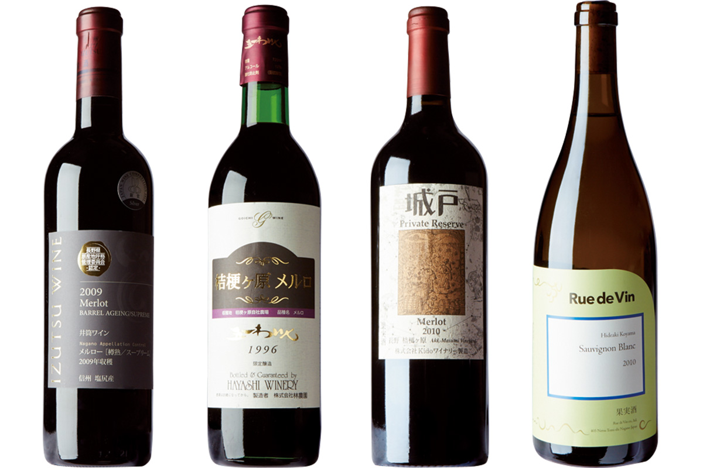
Горы Синсю дарят не только дичь. В оберже есть сыры с местных ферм и домашние джемы. Яцугатакэ к тому же славится грибами: новые виды здесь находят каждый год. Особенно хороши осенние грибы симэдзи, и их сезон совпадает с началом настоящего охотничьего сезона.
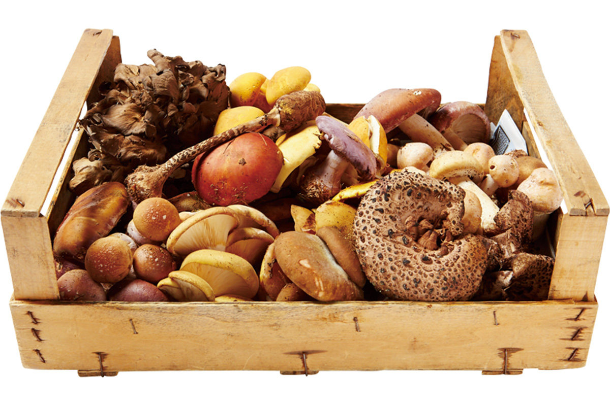
Обержа
Где попробовать дичь Синсю
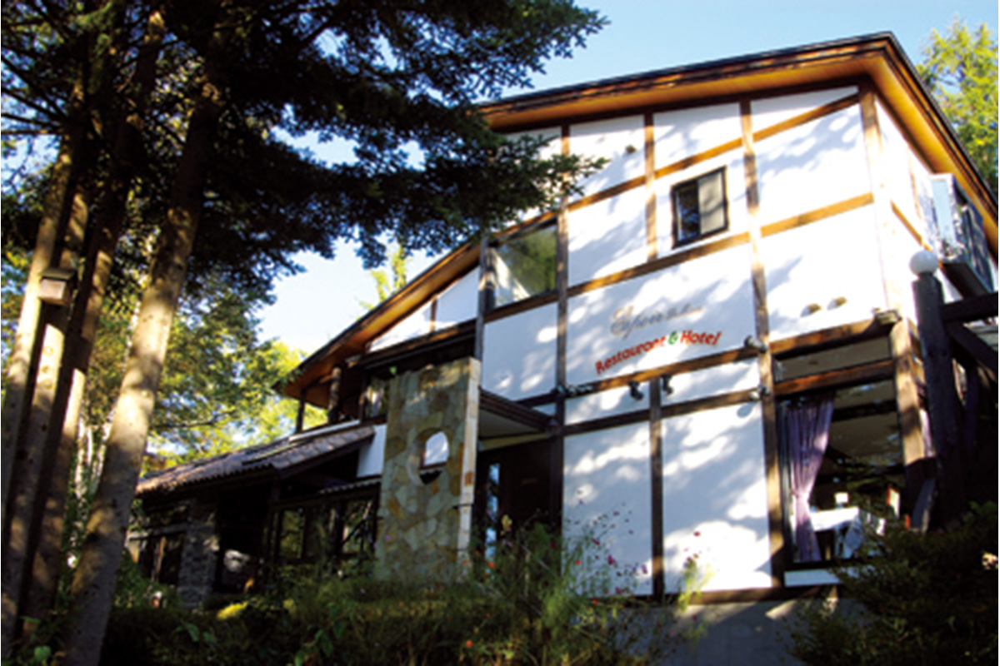
Auberge Espoir это настоящая обержа, где готовят французскую кухню из местных продуктов. Летом сюда едут за прохладой, зимой за свежей дичью, так что природой Татэсины здесь можно наслаждаться круглый год.
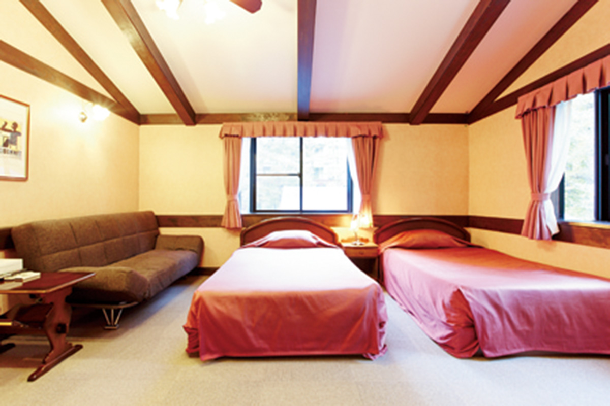
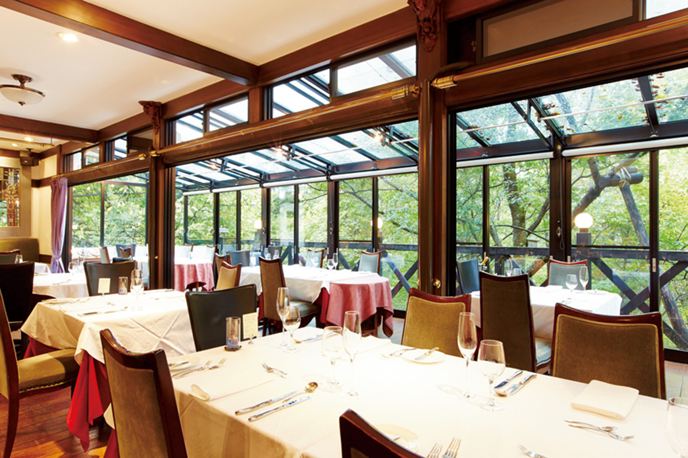
Auberge Espoir
- Адрес
- префектура Нагано, Тино, Китаяма, Татэсина-Тюо-Когэн
- Телефон
- +81 266-67-4250
- Часы работы
- 12:00–13:30 (последний заказ), 17:45–19:00 (последний заказ)
- Выходные
- четверг (в августе без выходных)
Фото: Кунихару Вакабаяси.